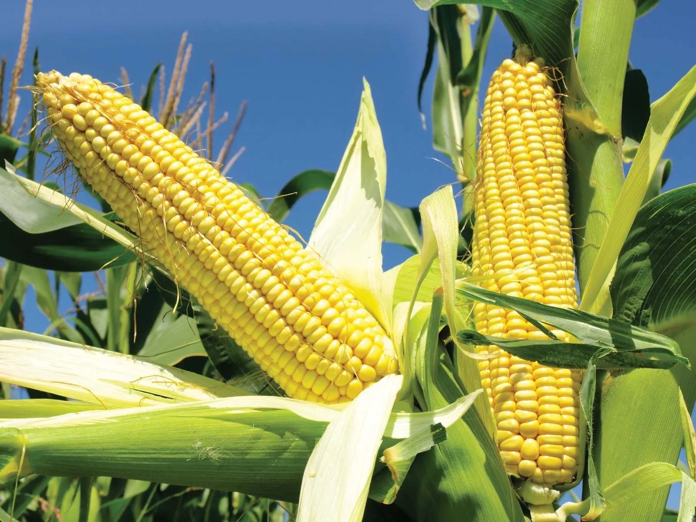

Choose a suitable field with well-drained soil. Rice requires a lot of water, so the field should be
able to
retain water without becoming waterlogged.
Plow the field to break up the soil and create a fine seedbed.
Level the field to ensure uniform water distribution during cultivation.
Seedbed Preparation:
Prepare a seedbed either on the same field or a separate location. This is where the rice seeds will be
sown and
germinated before transplanting.
Sow the rice seeds in rows, ensuring proper spacing.
Seed Germination:
Keep the seedbed adequately watered to facilitate germination.
Monitor the seedlings for pests and diseases, and take appropriate measures if necessary.
Nursery Maintenance:
Once the rice seedlings have reached a suitable height (usually a few inches), they are ready for
transplanting.
Maintain the nursery by providing sufficient water and protecting the seedlings from pests.
Transplanting:
Transplant the seedlings from the nursery to the main field. This is typically done when the seedlings
have 3-4
leaves.
Ensure proper spacing between the transplanted seedlings to allow for healthy growth.
Water Management:
Rice requires a lot of water for optimal growth. Maintain a consistent water level in the field,
especially
during the growing season.
In some cases, farmers use traditional flood irrigation methods, while others may use more modern techniques
such as drip or sprinkler irrigation.
Fertilization:
Apply fertilizers based on soil testing and the specific nutrient requirements of rice. Common
fertilizers
include nitrogen, phosphorus, and potassium.
Harvesting:
Harvesting is typically done when the rice grains have matured and turned golden brown.
Use sickles or combine harvesters for large-scale operations.
Drying and Threshing:
Dry the harvested rice in the sun or using mechanical dryers.
Once dried, thresh the rice to separate the grains from the straw.
Milling and Storage:
Mill the rice to remove the outer husk, bran, and germ.
Store the processed rice in a cool, dry place.
हिंदी
भूमि की तैयारी:
अच्छी जल निकास वाली मिट्टी वाला उपयुक्त खेत चुनें। चावल के लिए बहुत अधिक पानी की आवश्यकता होती है,
इसलिए खेत
को जलभराव के बिना पानी बनाए रखने में सक्षम होना चाहिए।
मिट्टी को तोड़ने और बढ़िया बीजभूमि बनाने के लिए खेत की जुताई करें।
खेती के दौरान समान जल वितरण सुनिश्चित करने के लिए खेत को समतल करें।
बीज तैयार करना:
उ
सी खेत में या अलग स्थान पर बीज क्यारी तैयार करें। यहीं पर चावल के बीज बोए जाएंगे और रोपाई से पहले
अंकुरित किए
जाएंगे।
उचित दूरी सुनिश्चित करते हुए, चावल के बीज पंक्तियों में बोएं।
बीज अंकुरण:
अंकुरण को सुविधाजनक बनाने के लिए बीज क्यारी को पर्याप्त पानी देते रहें।
कीटों और बीमारियों के लिए पौध की निगरानी करें और यदि आवश्यक हो तो उचित उपाय करें।
नर्सरी रखरखाव:
एक बार जब चावल के पौधे उपयुक्त ऊंचाई (आमतौर पर कुछ इंच) तक पहुंच जाते हैं, तो वे रोपाई के लिए तैयार हो
जाते
हैं।
पर्याप्त पानी उपलब्ध कराकर और पौधों को कीटों से बचाकर नर्सरी का रखरखाव करें।
प्रत्यारोपण:
पौध को नर्सरी से मुख्य खेत में रोपें। यह आमतौर पर तब किया जाता है जब पौधों में 3-4 पत्तियाँ हों।
स्वस्थ विकास के लिए प्रत्यारोपित पौधों के बीच उचित दूरी सुनिश्चित करें।
जल प्रबंधन:
चावल के सर्वोत्तम विकास के लिए बहुत अधिक पानी की आवश्यकता होती है। खेत में लगातार जल स्तर बनाए रखें,
खासकर
बढ़ते मौसम के दौरान।
कुछ मामलों में, किसान पारंपरिक बाढ़ सिंचाई विधियों का उपयोग करते हैं, जबकि अन्य अधिक आधुनिक तकनीकों जैसे ड्रिप
या स्प्रिंकलर सिंचाई का उपयोग कर सकते हैं।
निषेचन:
मिट्टी परीक्षण और चावल की विशिष्ट पोषक तत्वों की आवश्यकताओं के आधार पर उर्वरकों का प्रयोग करें।
सामान्य
उर्वरकों में नाइट्रोजन, फास्फोरस और पोटेशियम शामिल हैं।
खरपतवार नियंत्रण:
चावल के खेत को खरपतवारों से मुक्त रखें, क्योंकि वे पोषक तत्वों और सूरज की रोशनी के लिए चावल के पौधों
से
प्रतिस्पर्धा कर सकते हैं।
खरपतवार नियंत्रण के लिए हाथ से निराई-गुड़ाई या शाकनाशी का उपयोग किया जा सकता है।
कीट एवं रोग प्रबंधन:
कीटों और बीमारियों के लिए फसल की नियमित निगरानी करें।
आवश्यकतानुसार कीटनाशक या अन्य नियंत्रण उपाय लागू करें।
कटाई:
कटाई आमतौर पर तब की जाती है जब चावल के दाने परिपक्व हो जाएं और सुनहरे भूरे रंग के हो जाएं।
बड़े पैमाने पर कार्यों के लिए दरांती या कंबाइन हार्वेस्टर का उपयोग करें।
सुखाना और गहाई करना:
कटे हुए चावल को धूप में या यांत्रिक ड्रायर का उपयोग करके सुखाएं।
एक बार सूख जाने पर, चावल को भूसे से अनाज को अलग करने के लिए पीस लें।
मिलिंग और भंडारण:
बाहरी भूसी, चोकर और रोगाणु को हटाने के लिए चावल को पीस लें।
प्रसंस्कृत चावल को ठंडी, सूखी जगह पर रखें।
सुनना
2. CASHEW / 2. काजू
ENGLISH
Selection of Suitable Land:
Choose well-drained soil with good fertility for cashew cultivation. Sandy-loam soils are generally
preferred.
Ensure proper sunlight exposure, as cashew trees thrive in sunny conditions.
Site Preparation:
Clear the land of any debris or unwanted vegetation.
Plow and harrow the soil to prepare a suitable seedbed for planting.
Propagation:
Cashew is usually propagated through seeds or grafting.
If seeds are used, they are planted directly in the field or in nurseries. Grafted plants can also be planted.
Planting:
Cashew plants are usually spaced at a distance of about 7 to 10 meters apart, depending on the variety
and local conditions.
Plant the seedlings or grafted plants at the beginning of the rainy season to facilitate establishment.
Watering:
Provide adequate water to young cashew plants, especially during the dry season. Once established,
cashew trees are relatively drought-tolerant.
Weed Control:
Control weeds around the base of the cashew trees to reduce competition for nutrients and water.
Mulching can be used to suppress weeds and retain soil moisture.
Fertilization:
Apply fertilizers based on soil testing and the nutritional needs of cashew trees.
Commonly used fertilizers include organic manure, nitrogen, phosphorus, and potassium.
Pruning:
Prune the cashew trees to shape them and encourage a balanced canopy.
Remove dead or diseased branches regularly.
Pest and Disease Management:
Monitor for pests such as stem borers and aphids, as well as diseases like powdery mildew.
Use appropriate pesticides or other control measures as needed.
Harvesting:
Cashew trees start bearing fruit in 3-5 years. Harvesting is typically done once a year.
Harvest the cashew nuts when they are fully mature, usually identified by the nut's color changing from green to
brown.
The cashew apples are also harvested and can be used for making beverages or processed into cashew apple
products.
हिंदी
उपयुक्त भूमि का चयन:
काजू की खेती के लिए अच्छी उर्वरता वाली अच्छी जल निकास वाली मिट्टी चुनें। आमतौर पर बलुई-दोमट मिट्टी को
प्राथमिकता दी जाती है।
सुनिश्चित करें कि सूरज की रोशनी उचित मात्रा में मिले, क्योंकि काजू के पेड़ धूप वाली स्थितियों में ही
फलते-फूलते हैं।
कार्यस्थल पर काम की तैयारी:
किसी भी मलबे या अवांछित वनस्पति से भूमि साफ़ करें।
रोपण के लिए उपयुक्त बीज क्यारी तैयार करने के लिए मिट्टी की जुताई और हेराफेरी करें।
प्रसार:
काजू का प्रवर्धन आमतौर पर बीज या ग्राफ्टिंग के माध्यम से किया जाता है।
यदि बीज का उपयोग किया जाता है, तो उन्हें सीधे खेत में या नर्सरी में लगाया जाता है। ग्राफ्टेड पौधे भी लगाए जा
सकते हैं।
रोपण:
काजू के पौधे आमतौर पर विविधता और स्थानीय परिस्थितियों के आधार पर लगभग 7 से 10 मीटर की दूरी पर लगाए
जाते हैं।
स्थापना की सुविधा के लिए बरसात के मौसम की शुरुआत में रोपण या ग्राफ्टेड पौधे लगाएं।
पानी देना:
विशेषकर शुष्क मौसम के दौरान काजू के युवा पौधों को पर्याप्त पानी दें। एक बार स्थापित होने के बाद, काजू
के पेड़ अपेक्षाकृत सूखा-सहिष्णु होते हैं।
खरपतवार नियंत्रण:
पोषक तत्वों और पानी के लिए प्रतिस्पर्धा को कम करने के लिए काजू के पेड़ों के आधार के आसपास खर-पतवार को
नियंत्रित करें।
खरपतवारों को दबाने और मिट्टी की नमी बनाए रखने के लिए मल्चिंग का उपयोग किया जा सकता है।
निषेचन:
मिट्टी परीक्षण और काजू के पेड़ों की पोषण संबंधी आवश्यकताओं के आधार पर उर्वरकों का प्रयोग करें।
आमतौर पर उपयोग किए जाने वाले उर्वरकों में जैविक खाद, नाइट्रोजन, फास्फोरस और पोटेशियम शामिल हैं।
छंटाई:
काजू के पेड़ों को आकार देने और संतुलित छतरी को प्रोत्साहित करने के लिए उनकी छँटाई करें।
मृत या रोगग्रस्त शाखाओं को नियमित रूप से हटाएँ।
कीट एवं रोग प्रबंधन:
तना छेदक और एफिड जैसे कीटों के साथ-साथ ख़स्ता फफूंदी जैसी बीमारियों की निगरानी करें।
आवश्यकतानुसार उचित कीटनाशकों या अन्य नियंत्रण उपायों का प्रयोग करें।
कटाई:
काजू के पेड़ 3-5 साल में फल देना शुरू कर देते हैं। कटाई आमतौर पर साल में एक बार की जाती है।
काजू की कटाई तब करें जब वे पूरी तरह से परिपक्व हो जाएं, आमतौर पर इसकी पहचान अखरोट के हरे से भूरे रंग में बदलाव
से होती है।
काजू सेब की भी कटाई की जाती है और इसका उपयोग पेय पदार्थ बनाने या काजू सेब उत्पादों में संसाधित करने के लिए
किया जा सकता है।
प्रसंस्करण:
काजू सेब में से काजू निकाल लीजिये.
काजू को धूप में या मैकेनिकल ड्रायर का उपयोग करके सुखाएं।
बाहरी आवरण को हटाने और खाने योग्य काजू गिरी प्राप्त करने के लिए सूखे काजू को संसाधित करें।
भंडारण:
प्रसंस्कृत काजू को खराब होने से बचाने के लिए ठंडी, सूखी जगह पर रखें।
सुनना
3. COCONUT / 3. नारियल
ENGLISH
Land Preparation:
Choose well-drained soil with good water retention.
Clear the land of weeds and debris.
Dig pits for planting coconut saplings, spaced according to the variety and local conditions.
Variety Selection:
Choose a coconut variety suitable for the local climate and soil conditions.
Dwarf varieties are often preferred for ease of harvesting.
Planting:
Plant healthy and disease-free coconut saplings in the prepared pits.
Ensure that the soil around the sapling is firmly packed to provide stability.
Planting is usually done at the beginning of the monsoon season.
Watering:
Provide regular and consistent watering, especially during the initial establishment period.
Once established, coconut trees are generally drought-tolerant.
Fertilization:
Apply organic manure and balanced fertilizers according to the age of the coconut tree.
Commonly used fertilizers include those containing nitrogen, phosphorus, and potassium.
Weed Control:
Control weeds around the base of the coconut trees to reduce competition for nutrients.
Mulching can be used to suppress weeds and conserve soil moisture.
Pruning:
Prune dead or diseased fronds regularly to maintain a healthy canopy.
Remove any inflorescences or fruits that may be damaged or diseased.
Pest and Disease Management:
Monitor for pests such as coconut mites and rhinoceros beetles.
Control measures may include the use of pesticides and biological control methods.
Common diseases include bud rot and lethal yellowing, and preventive measures should be taken.
Harvesting:
Coconut trees typically start bearing fruit in 5-7 years.
Harvest coconuts when they are fully mature. This is indicated by changes in color and sound when tapping the
nut.
Processing:
Husk removal: Remove the outer husk of the coconut to expose the shell.
Dehusking: Remove the hard shell to reveal the coconut kernel.
Deshelling: Extract the edible coconut meat from the kernel.
Storage:
Store coconuts in a cool, dry place.
Coconut products like copra (dried coconut kernel) can be stored for a longer duration.
हिंदी
भूमि की तैयारी:
अच्छी जलधारण क्षमता वाली अच्छी जल निकास वाली मिट्टी चुनें।
भूमि को खरपतवार और मलबे से साफ़ करें।
नारियल के पौधे लगाने के लिए विविधता और स्थानीय परिस्थितियों के अनुसार गड्ढे खोदें।
किस्म का चयन:
स्थानीय जलवायु और मिट्टी की स्थिति के लिए उपयुक्त नारियल की किस्म चुनें।
कटाई में आसानी के लिए अक्सर बौनी किस्मों को प्राथमिकता दी जाती है।
रोपण:
तैयार गड्ढों में स्वस्थ एवं रोगमुक्त नारियल के पौधे लगाएं।
सुनिश्चित करें कि स्थिरता प्रदान करने के लिए पौधे के चारों ओर की मिट्टी मजबूती से भरी हुई है।
पौधारोपण आमतौर पर मानसून के मौसम की शुरुआत में किया जाता है।
पानी देना:
विशेष रूप से प्रारंभिक स्थापना अवधि के दौरान, नियमित और लगातार पानी दें।
एक बार स्थापित होने के बाद, नारियल के पेड़ आम तौर पर सूखा-सहिष्णु होते हैं।
निषेचन:
नारियल के पेड़ की उम्र के अनुसार जैविक खाद और संतुलित उर्वरक डालें।
आमतौर पर उपयोग किए जाने वाले उर्वरकों में नाइट्रोजन, फास्फोरस और पोटेशियम युक्त उर्वरक शामिल हैं।
खरपतवार नियंत्रण:
पोषक तत्वों के लिए प्रतिस्पर्धा को कम करने के लिए नारियल के पेड़ों के आधार के आसपास खरपतवारों को
नियंत्रित
करें।
खरपतवारों को दबाने और मिट्टी की नमी को संरक्षित करने के लिए मल्चिंग का उपयोग किया जा सकता है।
छंटाई:
स्वस्थ छतरी बनाए रखने के लिए मृत या रोगग्रस्त पौधों की नियमित रूप से छँटाई करें।
किसी भी पुष्पक्रम या फल को हटा दें जो क्षतिग्रस्त या रोगग्रस्त हो सकता है।
कीट एवं रोग प्रबंधन:
नारियल के कण और गैंडा बीटल जैसे कीटों की निगरानी करें।
नियंत्रण उपायों में कीटनाशकों और जैविक नियंत्रण विधियों का उपयोग शामिल हो सकता है।
सामान्य बीमारियों में कली सड़न और घातक पीलापन शामिल है, और निवारक उपाय किए जाने चाहिए।
कटाई:
नारियल के पेड़ आमतौर पर 5-7 साल में फल देने लगते हैं।
जब नारियल पूरी तरह परिपक्व हो जाएं तो उनकी कटाई करें। यह नट को थपथपाने पर रंग और ध्वनि में परिवर्तन से संकेत
मिलता है।
प्रसंस्करण:
भूसी हटाना: खोल को उजागर करने के लिए नारियल की बाहरी भूसी को हटा दें।
भूसी निकालना: नारियल की गिरी को प्रकट करने के लिए कठोर खोल को हटा दें।
छिलके उतारना: गिरी से खाने योग्य नारियल का मांस निकालें।
भंडारण:
नारियल को ठंडी, सूखी जगह पर रखें।
खोपरा (सूखे नारियल की गिरी) जैसे नारियल उत्पादों को लंबी अवधि तक संग्रहीत किया जा सकता है।
सुनना
4. COCOA / 4. कोको
ENGLISH
Cocoa cultivation, which is primarily for the production of cocoa beans used in chocolate production,
requires
specific conditions and practices. While cocoa is not commonly grown in Goa due to its tropical climate and soil
requirements, I'll provide a general step-by-step guide for cocoa cultivation:
Climate and Soil Selection:
Cocoa is a tropical plant that thrives in warm, humid climates with well-distributed rainfall.
Choose well-drained, fertile soils with good organic matter content. Cocoa trees prefer slightly acidic to
neutral soil.
Variety Selection:
Choose cocoa varieties that are well-suited to the local climate and soil conditions.
Common varieties include Forastero, Criollo, and Trinitario.
Propagation:
Cocoa is typically propagated through seeds or seedlings.
Seeds are planted in nurseries, and once seedlings reach a suitable size, they are transplanted to the main
field.
Planting:
Plant cocoa trees in well-prepared pits or holes, usually spaced at distances of 3 to 4 meters.
Planting is often done at the onset of the rainy season to facilitate establishment.
Shade Management:
Young cocoa trees require shade to protect them from direct sunlight. Shade trees or temporary shade
structures
may be used.
As cocoa trees mature, the shade may be gradually reduced.
Watering:
Provide regular and consistent watering, especially during dry periods.
Cocoa trees are sensitive to water stress, particularly during flowering and fruit development.
Fertilization:
Apply fertilizers based on soil nutrient levels and the specific needs of cocoa trees.
Commonly used fertilizers include those containing nitrogen, phosphorus, and potassium.
Weed Control:
Control weeds around the base of cocoa trees to reduce competition for nutrients and water.
Mulching can be used to suppress weeds and conserve soil moisture.
Pruning:
Prune cocoa trees to shape them, remove diseased or dead wood, and improve air circulation.
Pruning can also help manage tree height for ease of harvesting.
Pest and Disease Management:
Monitor for pests such as cocoa pod borer and diseases like black pod disease.
Implement integrated pest management (IPM) practices and use appropriate fungicides or insecticides when
necessary.
Harvesting:
Cocoa trees typically start producing pods in 3-5 years.
Harvest cocoa pods when they are fully mature. This is often indicated by a change in color and a slight
yellowing or browning of the pods.
Processing:
Open the harvested cocoa pods and remove the cocoa beans.
Ferment the cocoa beans to develop flavor and aroma.
Dry the fermented beans in the sun or using mechanical dryers.
Storage:
Store the dried cocoa beans in a cool, dry place.
Proper storage is crucial to prevent mold growth and maintain the quality of the beans.
हिंदी
कोको की खेती, जो मुख्य रूप से चॉकलेट उत्पादन में उपयोग की जाने वाली कोको बीन्स के उत्पादन के लिए होती
है, के
लिए विशिष्ट परिस्थितियों और प्रथाओं की आवश्यकता होती है। हालाँकि गोवा की उष्णकटिबंधीय जलवायु और मिट्टी की
आवश्यकताओं के कारण कोको आमतौर पर गोवा में नहीं उगाया जाता है, मैं कोको की खेती के लिए एक सामान्य चरण-दर-चरण
मार्गदर्शिका प्रदान करूँगा:
जलवायु और मिट्टी का चयन:
कोको एक उष्णकटिबंधीय पौधा है जो अच्छी तरह से वितरित वर्षा के साथ गर्म, आर्द्र जलवायु में पनपता है।
अच्छी जल निकासी वाली, अच्छी कार्बनिक पदार्थ सामग्री वाली उपजाऊ मिट्टी चुनें। कोको के पेड़ तटस्थ मिट्टी की
तुलना में थोड़ी अम्लीय मिट्टी पसंद करते हैं।
किस्म का चयन:
कोको की ऐसी किस्में चुनें जो स्थानीय जलवायु और मिट्टी की स्थितियों के लिए उपयुक्त हों।
सामान्य किस्मों में फोरास्टेरो, क्रिओलो और ट्रिनिटारियो शामिल हैं।
प्रसार:
कोको को आमतौर पर बीज या अंकुर के माध्यम से प्रचारित किया जाता है।
बीज नर्सरी में लगाए जाते हैं, और एक बार जब पौधे उपयुक्त आकार तक पहुंच जाते हैं, तो उन्हें मुख्य खेत में
प्रत्यारोपित किया जाता है।
रोपण:
कोको के पेड़ अच्छी तरह से तैयार गड्ढों या गड्ढों में लगाएं, आमतौर पर 3 से 4 मीटर की दूरी पर।
स्थापना को सुविधाजनक बनाने के लिए पौधारोपण अक्सर बरसात के मौसम की शुरुआत में किया जाता है।
छाया प्रबंधन:
युवा कोको पेड़ों को सीधी धूप से बचाने के लिए छाया की आवश्यकता होती है। छायादार वृक्षों या अस्थायी
छायादार
संरचनाओं का उपयोग किया जा सकता है।
जैसे-जैसे कोको के पेड़ परिपक्व होते हैं, छाया धीरे-धीरे कम हो सकती है।
पानी देना:
विशेष रूप से शुष्क अवधि के दौरान नियमित और लगातार पानी दें।
कोको के पेड़ पानी के तनाव के प्रति संवेदनशील होते हैं, खासकर फूल आने और फलों के विकास के दौरान।
निषेचन:
मिट्टी में पोषक तत्वों के स्तर और कोको के पेड़ों की विशिष्ट आवश्यकताओं के आधार पर उर्वरकों का प्रयोग
करें।
आमतौर पर उपयोग किए जाने वाले उर्वरकों में नाइट्रोजन, फास्फोरस और पोटेशियम युक्त उर्वरक शामिल हैं।
खरपतवार नियंत्रण:
पोषक तत्वों और पानी के लिए प्रतिस्पर्धा को कम करने के लिए कोको के पेड़ों के आधार के आसपास खरपतवारों को
नियंत्रित करें।
खरपतवारों को दबाने और मिट्टी की नमी को संरक्षित करने के लिए मल्चिंग का उपयोग किया जा सकता है।
छंटाई:
कोको के पेड़ों को आकार देने के लिए उनकी छंटाई करें, रोगग्रस्त या मृत लकड़ी को हटा दें और वायु परिसंचरण
में
सुधार करें।
कटाई में आसानी के लिए छंटाई से पेड़ की ऊंचाई को प्रबंधित करने में भी मदद मिल सकती है।
कीट एवं रोग प्रबंधन:
कोको फली छेदक जैसे कीटों और काली फली रोग जैसी बीमारियों की निगरानी करें।
एकीकृत कीट प्रबंधन (आईपीएम) प्रथाओं को लागू करें और आवश्यक होने पर उचित कवकनाशी या कीटनाशकों का उपयोग करें।
कटाई:
कोको के पेड़ आमतौर पर 3-5 वर्षों में फलियाँ देना शुरू कर देते हैं।
जब कोको फली पूरी तरह परिपक्व हो जाएं तो उनकी कटाई करें। इसका संकेत अक्सर रंग में बदलाव और फलियों का हल्का
पीलापन या भूरापन होता है।
प्रसंस्करण:
कटी हुई कोको फली को खोलें और कोको बीन्स को हटा दें।
स्वाद और सुगंध विकसित करने के लिए कोको बीन्स को किण्वित करें।
किण्वित फलियों को धूप में या यांत्रिक ड्रायर का उपयोग करके सुखाएं।
भंडारण:
सूखे कोको बीन्स को ठंडी, सूखी जगह पर रखें।
फफूंद की वृद्धि को रोकने और फलियों की गुणवत्ता बनाए रखने के लिए उचित भंडारण महत्वपूर्ण है।
सुनना
5. BETAL NUT / 5. पान सुपारी
ENGLISH
Climate and Soil Selection:
Betel nut trees thrive in warm, humid climates with well-distributed rainfall.
Select well-drained, loamy soils with good organic matter content. Betel nut trees can tolerate a range of soil
types but prefer slightly acidic to neutral conditions.
Variety Selection:
Choose betel nut varieties suitable for the local climate and soil conditions.
The most common varieties include the Areca catechu species.
Propagation:
Betel nut is propagated through seeds or vegetative means like suckers.
Seeds are sown in nurseries, and once seedlings are large enough, they can be transplanted to the main field.
Planting:
Plant betel nut trees in well-prepared pits or holes, spaced according to the variety and local
conditions.
Planting is typically done at the onset of the rainy season.
Watering:
Provide regular and consistent watering, especially during dry periods.
Betel nut trees prefer moist soil conditions, but waterlogging should be avoided.
Fertilization:
Apply fertilizers based on soil nutrient levels and the specific needs of betel nut trees.
Commonly used fertilizers include those containing nitrogen, phosphorus, and potassium.
Weed Control:
Control weeds around the base of betel nut trees to reduce competition for nutrients and water.
Mulching can be used to suppress weeds and conserve soil moisture.
Pruning:
Prune betel nut trees to remove dead or diseased fronds and maintain a desirable canopy shape.
Pruning also helps in managing tree height for ease of harvesting.
Pest and Disease Management:
Monitor for pests such as scale insects and diseases like Phytophthora.
Implement integrated pest management (IPM) practices and use appropriate pesticides or fungicides when
necessary.
Harvesting:
Betel nut trees typically start bearing fruit in 3-5 years.
Harvest betel nuts when they are fully mature. This is usually indicated by changes in color and size of the
nuts.
Processing:
Harvested betel nuts are separated from the fruit and husk.
Clean and sun-dry the nuts to reduce moisture content.
Optionally, the betel nuts may be processed further based on local market demands.
Storage:
Store the dried betel nuts in a cool, dry place.
Proper storage is essential to prevent mold growth and maintain the quality of the betel nuts.
हिंदी
जलवायु और मिट्टी का चयन:
सुपारी के पेड़ अच्छी तरह से वितरित वर्षा के साथ गर्म, आर्द्र जलवायु में पनपते हैं।
अच्छे जल निकास वाली, अच्छी कार्बनिक पदार्थ वाली दोमट मिट्टी का चयन करें। सुपारी के पेड़ विभिन्न प्रकार की
मिट्टी को सहन कर सकते हैं, लेकिन थोड़ी अम्लीय से लेकर तटस्थ स्थितियों को पसंद करते हैं।
किस्म का चयन:
स्थानीय जलवायु और मिट्टी की स्थिति के लिए उपयुक्त सुपारी की किस्में चुनें।
सबसे आम किस्मों में एरेका कैटेचू प्रजाति शामिल है।
प्रसार:
सुपारी का प्रवर्धन बीज या सकर जैसे वानस्पतिक साधनों के माध्यम से किया जाता है।
बीज नर्सरी में बोए जाते हैं, और जब अंकुर काफी बड़े हो जाएं, तो उन्हें मुख्य खेत में प्रत्यारोपित किया जा सकता
है।
रोपण:
सुपारी के पेड़ों को अच्छी तरह से तैयार किए गए गड्ढों या गड्ढों में, विविधता और स्थानीय परिस्थितियों
के अनुसार
दूरी बनाकर लगाएं।
पौधारोपण आमतौर पर बरसात के मौसम की शुरुआत में किया जाता है।
पानी देना:
विशेष रूप से शुष्क अवधि के दौरान नियमित और लगातार पानी दें।
सुपारी के पेड़ नम मिट्टी की स्थिति पसंद करते हैं, लेकिन जलभराव से बचना चाहिए।
निषेचन:
मिट्टी में पोषक तत्वों के स्तर और सुपारी के पेड़ों की विशिष्ट आवश्यकताओं के आधार पर उर्वरकों का
प्रयोग करें।
आमतौर पर उपयोग किए जाने वाले उर्वरकों में नाइट्रोजन, फास्फोरस और पोटेशियम युक्त उर्वरक शामिल हैं।
खरपतवार नियंत्रण:
पोषक तत्वों और पानी के लिए प्रतिस्पर्धा को कम करने के लिए सुपारी के पेड़ों के आधार के आसपास खरपतवारों
को
नियंत्रित करें।
खरपतवारों को दबाने और मिट्टी की नमी को संरक्षित करने के लिए मल्चिंग का उपयोग किया जा सकता है।
छंटाई:
मृत या रोगग्रस्त पत्तों को हटाने और वांछनीय छत्र आकार बनाए रखने के लिए सुपारी के पेड़ों की छँटाई
करें।
कटाई में आसानी के लिए छंटाई पेड़ की ऊंचाई को प्रबंधित करने में भी मदद करती है।
कीट एवं रोग प्रबंधन:
स्केल कीटों जैसे कीटों और फाइटोफ्थोरा जैसी बीमारियों की निगरानी करें।
एकीकृत कीट प्रबंधन (आईपीएम) प्रथाओं को लागू करें और आवश्यक होने पर उचित कीटनाशकों या कवकनाशी का उपयोग करें।
कटाई:
सुपारी के पेड़ आमतौर पर 3-5 साल में फल देने लगते हैं।
सुपारी की कटाई तब करें जब वे पूरी तरह परिपक्व हो जाएं। यह आमतौर पर मेवों के रंग और आकार में परिवर्तन से संकेत
मिलता है।
प्रसंस्करण:
तोड़ी गई सुपारी को फल और भूसी से अलग किया जाता है।
नमी की मात्रा कम करने के लिए मेवों को साफ करके धूप में सुखा लें।
वैकल्पिक रूप से, स्थानीय बाजार की मांग के आधार पर सुपारी को आगे संसाधित किया जा सकता है।
भंडारण:
सूखी सुपारी को ठंडी, सूखी जगह पर रखें।
फफूंद की वृद्धि को रोकने और सुपारी की गुणवत्ता बनाए रखने के लिए उचित भंडारण आवश्यक है।
सुनना
6. BETAL LEAF (PAAN) / 6. बेताल का पत्ता (पान)
ENGLISH
Climate and Soil Selection:
Betel leaf plants thrive in warm, humid climates with a temperature range of 20-30°C.
Choose well-drained, fertile soils with a slightly acidic to neutral pH.
Partial shade is preferred, and the plants can be grown under tree canopies or in areas with filtered sunlight.
Variety Selection:
Choose betel leaf varieties suitable for the local climate and soil conditions.
Common varieties include Bangla, Kapoori, and Mysore.
Propagation:
Betel leaf is usually propagated through vegetative means such as stem cuttings.
Prepare healthy cuttings with at least two nodes, and plant them in well-prepared soil or nursery beds.
Planting:
Plant betel leaf cuttings in rows with spacing of about 1-1.5 meters between plants and 2-3 meters
between rows.
Planting can be done throughout the year, but it's often best during the monsoon season.
Watering:
Provide regular and consistent watering, keeping the soil consistently moist but not waterlogged.
Mulching can help retain soil moisture and suppress weeds.
Fertilization:
Apply organic manure and balanced fertilizers, especially nitrogen-rich ones, to promote vigorous leaf
growth.
Fertilize the plants during the growing season, typically every 2-3 months.
Weed Control:
Control weeds around the base of betel leaf plants to reduce competition for nutrients.
Mulching and manual weeding can be employed for weed control.
Support Structures:
Betel leaf plants are often grown on support structures, such as bamboo frames or trellises.
Regularly tie the vines to the support structures to encourage upward growth.
Pruning:
Prune the plants to encourage branching and manage their size.
Remove any yellow or diseased leaves to maintain plant health.
Pest and Disease Management:
Monitor for pests such as mites and caterpillars, as well as diseases like leaf spot.
Use organic or chemical control methods as needed.
Harvesting:
Betel leaf plants are usually ready for the first harvest within 3-4 months of planting.
Harvest leaves individually, avoiding damage to the central shoot.
Harvest mature leaves for better flavor and quality.
Post-Harvest Processing:
Clean the harvested betel leaves to remove dirt and debris.
Bundle the leaves for transportation to markets or local vendors.
Storage:
Betel leaves have a short shelf life and are best used fresh.
If necessary, store betel leaves in a cool, humid environment to extend their freshness.
हिंदी
जलवायु और मिट्टी का चयन:
पान के पौधे 20-30 डिग्री सेल्सियस के तापमान वाले गर्म, आर्द्र जलवायु में पनपते हैं।
थोड़ी अम्लीय से तटस्थ पीएच वाली अच्छी जल निकासी वाली, उपजाऊ मिट्टी चुनें।
आंशिक छाया को प्राथमिकता दी जाती है, और पौधों को पेड़ की छतरियों के नीचे या फ़िल्टर्ड सूरज की रोशनी वाले
क्षेत्रों में उगाया जा सकता है।
किस्म का चयन:
स्थानीय जलवायु और मिट्टी की स्थिति के लिए उपयुक्त पान के पत्ते की किस्में चुनें।
सामान्य किस्मों में बांग्ला, कपूरी और मैसूर शामिल हैं।
प्रसार:
पान के पत्ते का प्रसार आमतौर पर वानस्पतिक साधनों जैसे तने की कटिंग के माध्यम से किया जाता है।
कम से कम दो गांठों वाली स्वस्थ कटिंग तैयार करें और उन्हें अच्छी तरह से तैयार मिट्टी या नर्सरी बेड में रोपें।
रोपण:
पान के पत्तों की कलमों को पंक्तियों में लगाएं, पौधों के बीच लगभग 1-1.5 मीटर और पंक्तियों के बीच 2-3
मीटर का
अंतर रखें।
रोपण पूरे वर्ष किया जा सकता है, लेकिन यह अक्सर मानसून के मौसम के दौरान सबसे अच्छा होता है।
पानी देना:
नियमित और लगातार पानी दें, मिट्टी को लगातार नम रखें लेकिन जलभराव न रखें।
मल्चिंग से मिट्टी की नमी बनाए रखने और खरपतवारों को दबाने में मदद मिल सकती है।
निषेचन:
पत्तियों की जोरदार वृद्धि को बढ़ावा देने के लिए जैविक खाद और संतुलित उर्वरक, विशेष रूप से नाइट्रोजन
युक्त
उर्वरक, लागू करें।
बढ़ते मौसम के दौरान, आमतौर पर हर 2-3 महीने में पौधों को खाद दें।
खरपतवार नियंत्रण:
पोषक तत्वों के लिए प्रतिस्पर्धा को कम करने के लिए पान के पौधों के आधार के आसपास खरपतवारों को
नियंत्रित करें।
खरपतवार नियंत्रण के लिए मल्चिंग और हाथ से निराई-गुड़ाई का प्रयोग किया जा सकता है।
समर्थन संरचनाएँ:
पान के पत्ते के पौधे अक्सर बांस के तख्ते या जाली जैसी सहायक संरचनाओं पर उगाए जाते हैं।
ऊपर की ओर वृद्धि को प्रोत्साहित करने के लिए बेलों को नियमित रूप से समर्थन संरचनाओं से बांधें।
छंटाई:
शाखाओं को प्रोत्साहित करने और उनके आकार को प्रबंधित करने के लिए पौधों की छँटाई करें।
पौधों के स्वास्थ्य को बनाए रखने के लिए किसी भी पीली या रोगग्रस्त पत्तियों को हटा दें।
कीट एवं रोग प्रबंधन:
घुन और कैटरपिलर जैसे कीटों के साथ-साथ पत्ती के धब्बे जैसी बीमारियों की निगरानी करें।
आवश्यकतानुसार जैविक या रासायनिक नियंत्रण विधियों का प्रयोग करें।
कटाई:
पान के पौधे आमतौर पर रोपण के 3-4 महीने के भीतर पहली फसल के लिए तैयार हो जाते हैं।
केंद्रीय तने को नुकसान से बचाने के लिए पत्तियों की अलग-अलग कटाई करें।
बेहतर स्वाद और गुणवत्ता के लिए परिपक्व पत्तियों की कटाई करें।
कटाई के बाद का प्रसंस्करण:
गंदगी और मलबा हटाने के लिए काटे गए पान के पत्तों को साफ करें।
बाजारों या स्थानीय विक्रेताओं तक परिवहन के लिए पत्तियों को बंडल करें।
भंडारण:
पान के पत्तों की शेल्फ लाइफ कम होती है और इन्हें ताज़ा इस्तेमाल करना सबसे अच्छा होता है।
यदि आवश्यक हो, तो पान के पत्तों को उनकी ताज़गी बढ़ाने के लिए ठंडे, आर्द्र वातावरण में संग्रहित करें।
सुनना
7.TOBACCO / 7. तम्बाकू
ENGLISH
Climate and Soil Selection:
Tobacco plants thrive in warm climates with temperatures ranging between 20-30°C.
Choose well-drained, fertile soils with a slightly acidic to neutral pH.
Adequate sunlight is essential for the proper development of tobacco plants.
Variety Selection:
Choose tobacco varieties based on the intended use (cigarettes, cigars, chewing, etc.) and the local
climate.
Popular tobacco varieties include Virginia, Burley, and Oriental.
Seedbed Preparation:
Start by preparing a seedbed in a well-protected area.
Sow tobacco seeds in the seedbed, ensuring proper spacing.
Transplanting:
When the seedlings are 6-8 weeks old and have 4-6 leaves, they are ready for transplanting.
Transplant the seedlings to the main field with rows spaced according to the variety and local conditions.
Watering:
Provide regular and consistent watering, especially during dry periods.
Adequate moisture is crucial for the development of quality tobacco leaves.
Fertilization:
Apply fertilizers based on soil nutrient levels and the specific needs of tobacco plants.
Commonly used fertilizers include those containing nitrogen, phosphorus, and potassium.
Weed Control:
Control weeds around the tobacco plants to reduce competition for nutrients.
Mulching can be used to suppress weeds and conserve soil moisture.
Topping:
Topping involves removing the flowering head (inflorescence) of the tobacco plant to promote leaf
development.
Topping is typically done when the plants have reached a certain height and before flowering.
Suckering:
Remove unwanted shoots or "suckers" that grow in the leaf axils to redirect the plant's energy to the
main
leaves.
Priming and Harvesting:
Harvesting is done when the lower leaves are mature, typically starting from the bottom of the plant.
Leaves are primed or picked off the plant at different intervals as they mature.
Harvesting should be timed to achieve the desired color, texture, and chemical composition of the leaves.
Curing:
Curing is a crucial step to reduce the moisture content of the harvested leaves and develop flavor.
Common curing methods include air curing, flue-curing, sun-curing, and fire-curing, depending on the tobacco
type.
Grading and Packing:
After curing, tobacco leaves are graded based on quality, size, and color.
Pack the graded tobacco leaves in bales for storage and transportation.
Storage:
Store the packed tobacco in a cool, dry place to maintain its quality.
Proper storage is essential to prevent mold growth and maintain the characteristics of the tobacco.
Marketing:
Tobacco can be sold to manufacturers or through tobacco auctions, depending on local market practices
and
regulations.
हिंदी
जलवायु और मिट्टी का चयन:
तम्बाकू के पौधे 20-30°C के बीच तापमान वाले गर्म जलवायु में पनपते हैं।
थोड़ी अम्लीय से तटस्थ पीएच वाली अच्छी जल निकासी वाली, उपजाऊ मिट्टी चुनें।
तम्बाकू के पौधों के समुचित विकास के लिए पर्याप्त धूप आवश्यक है।
किस्म का चयन:
इच्छित उपयोग (सिगरेट, सिगार, चबाने आदि) और स्थानीय जलवायु के आधार पर तंबाकू की किस्मों का चयन करें।
लोकप्रिय तम्बाकू किस्मों में वर्जीनिया, बर्ली और ओरिएंटल शामिल हैं।
बीज तैयार करना:
एक अच्छी तरह से संरक्षित क्षेत्र में बीज क्यारी तैयार करके शुरुआत करें।
उचित दूरी सुनिश्चित करते हुए, बीज क्यारी में तम्बाकू के बीज बोएं।
प्रत्यारोपण:
जब पौधे 6-8 सप्ताह के हो जाएं और उनमें 4-6 पत्तियाँ आ जाएँ, तो वे रोपाई के लिए तैयार हो जाते हैं।
विविधता और स्थानीय परिस्थितियों के अनुसार कतारों में रोपाई करके मुख्य खेत में रोपाई करें।
पानी देना:
विशेष रूप से शुष्क अवधि के दौरान नियमित और लगातार पानी दें।
गुणवत्तापूर्ण तम्बाकू पत्तियों के विकास के लिए पर्याप्त नमी महत्वपूर्ण है।
निषेचन:
मिट्टी में पोषक तत्वों के स्तर और तंबाकू के पौधों की विशिष्ट आवश्यकताओं के आधार पर उर्वरकों का प्रयोग
करें।
आमतौर पर उपयोग किए जाने वाले उर्वरकों में नाइट्रोजन, फास्फोरस और पोटेशियम युक्त उर्वरक शामिल हैं।
खरपतवार नियंत्रण:
पोषक तत्वों के लिए प्रतिस्पर्धा को कम करने के लिए तंबाकू के पौधों के आसपास खरपतवारों को नियंत्रित
करें।
खरपतवारों को दबाने और मिट्टी की नमी को संरक्षित करने के लिए मल्चिंग का उपयोग किया जा सकता है।
उपरी परत:
टॉपिंग में पत्ती के विकास को बढ़ावा देने के लिए तंबाकू के पौधे के फूल वाले सिर (पुष्पक्रम) को हटाना
शामिल है।
टॉपिंग आमतौर पर तब की जाती है जब पौधे एक निश्चित ऊंचाई तक पहुंच जाते हैं और फूल आने से पहले।
चूसना:
पौधे की ऊर्जा को मुख्य पत्तियों पर पुनर्निर्देशित करने के लिए पत्ती की धुरी में उगने वाले अवांछित
अंकुरों या
"चूसने वालों" को हटा दें।
प्राइमिंग और कटाई:
कटाई तब की जाती है जब निचली पत्तियाँ परिपक्व हो जाती हैं, आमतौर पर पौधे के नीचे से शुरू होती हैं।
पत्तियों के परिपक्व होने पर उन्हें अलग-अलग अंतराल पर प्राइम किया जाता है या पौधे से तोड़ दिया जाता है।
पत्तियों के वांछित रंग, बनावट और रासायनिक संरचना को प्राप्त करने के लिए कटाई का समय निर्धारित किया जाना चाहिए।
इलाज:
काटी गई पत्तियों की नमी को कम करने और स्वाद विकसित करने के लिए उपचार एक महत्वपूर्ण कदम है।
तम्बाकू के प्रकार के आधार पर इलाज के सामान्य तरीकों में वायु इलाज, फ्लू-इलाज, धूप-इलाज और आग-इलाज शामिल हैं।
ग्रेडिंग और पैकिंग:
इलाज के बाद, तम्बाकू की पत्तियों को गुणवत्ता, आकार और रंग के आधार पर वर्गीकृत किया जाता है।
भंडारण और परिवहन के लिए श्रेणीबद्ध तंबाकू की पत्तियों को गांठों में पैक करें।
भंडारण:
इसकी गुणवत्ता बनाए रखने के लिए पैक किए गए तंबाकू को ठंडी, सूखी जगह पर रखें।
फफूंद वृद्धि को रोकने और तम्बाकू की विशेषताओं को बनाए रखने के लिए उचित भंडारण आवश्यक है।
विपणन:
स्थानीय बाज़ार प्रथाओं और विनियमों के आधार पर, तम्बाकू निर्माताओं को या तम्बाकू नीलामी के माध्यम से
बेचा जा
सकता है।
सुनना
8. WHEAT / 8. गेहूं
ENGLISH
Land Preparation:
Choose well-drained soils with good fertility for wheat cultivation.
Prepare the land by plowing to break up the soil and create a fine seedbed.
Level the field to ensure uniform water distribution during cultivation.
Seedbed Preparation:
Select high-quality wheat seeds suitable for the local climate and soil conditions.
Prepare a seedbed by harrowing and leveling the soil.
Sowing:
Sow the wheat seeds using a seed drill or broadcasting method.
Ensure proper seed spacing and depth, usually 1 to 2 inches deep.
Sowing is typically done in the fall for winter wheat or in the spring for spring wheat, depending on the
variety and regional climate.
Fertilization:
Apply fertilizers based on soil testing and the nutritional needs of wheat.
Common fertilizers include those containing nitrogen, phosphorus, and potassium.
Weed Control:
Control weeds through practices such as pre-planting herbicide application, manual weeding, or
post-emergence
herbicides.
Keep the wheat field free from competition for nutrients and sunlight.
Watering:
Provide adequate irrigation, especially during critical growth stages.
Wheat requires well-distributed water for optimal development.
Disease and Pest Management:
Monitor the wheat crop for common diseases such as rust and fungal infections.
Control measures may include the use of fungicides and resistant wheat varieties.
Keep an eye out for pests like aphids and implement integrated pest management (IPM) practices.
Growth Stages:
Wheat goes through different growth stages, including germination, tillering, stem elongation, heading,
flowering, grain filling, and maturation.
Each growth stage requires specific care and attention to ensure optimal yield.
Harvesting:
Harvest wheat when it reaches physiological maturity, indicated by a golden color and the firmness of
the
kernels.
Harvesting is typically done using combine harvesters, which cut and thresh the wheat in one pass.
Threshing and Winnowing:
Separate the wheat grains from the straw through threshing, which can be done mechanically or manually.
Winnowing involves separating the wheat grains from chaff by allowing the wind to blow away the lighter
material.
Drying:
Dry the harvested wheat to reduce moisture content to safe storage levels.
Proper drying helps prevent mold growth and maintain grain quality.
Storage:
Store the harvested and dried wheat in suitable storage facilities.
Protect the grain from pests and moisture to ensure its quality during storage.
हिंदी
भूमि की तैयारी:
गेहूं की खेती के लिए अच्छी उर्वरता वाली अच्छी जल निकास वाली मिट्टी चुनें।
मिट्टी को तोड़ने और बढ़िया बीज क्यारी बनाने के लिए जुताई करके भूमि तैयार करें।
खेती के दौरान समान जल वितरण सुनिश्चित करने के लिए खेत को समतल करें।
बीज तैयार करना:
स्थानीय जलवायु और मिट्टी की स्थिति के लिए उपयुक्त उच्च गुणवत्ता वाले गेहूं के बीज का चयन करें।
मिट्टी को समतल करके और समतल करके बीज क्यारी तैयार करें।
बुआई:
गेहूं के बीज की बुआई सीड ड्रिल या प्रसारण विधि से करें।
बीज के बीच उचित दूरी और गहराई सुनिश्चित करें, आमतौर पर 1 से 2 इंच गहरी।
विविधता और क्षेत्रीय जलवायु के आधार पर, बुआई आमतौर पर शीतकालीन गेहूं के लिए पतझड़ में या वसंत ऋतु में की जाती
है।
निषेचन:
मिट्टी परीक्षण और गेहूं की पोषण संबंधी आवश्यकताओं के आधार पर उर्वरकों का प्रयोग करें।
सामान्य उर्वरकों में नाइट्रोजन, फास्फोरस और पोटेशियम युक्त उर्वरक शामिल हैं।
खरपतवार नियंत्रण:
रोपण से पहले शाकनाशी अनुप्रयोग, मैन्युअल निराई, या उभरने के बाद शाकनाशी जैसी प्रथाओं के माध्यम से
खरपतवारों को
नियंत्रित करें।
गेहूं के खेत को पोषक तत्वों और सूरज की रोशनी के लिए प्रतिस्पर्धा से मुक्त रखें।
पानी देना:
विशेष रूप से महत्वपूर्ण विकास चरणों के दौरान पर्याप्त सिंचाई प्रदान करें।
गेहूं के सर्वोत्तम विकास के लिए अच्छी तरह से वितरित पानी की आवश्यकता होती है।
रोग एवं कीट प्रबंधन:
गेहूं की फसल में जंग और फंगल संक्रमण जैसी सामान्य बीमारियों की निगरानी करें।
नियंत्रण उपायों में फफूंदनाशी और प्रतिरोधी गेहूं किस्मों का उपयोग शामिल हो सकता है।
एफिड जैसे कीटों पर नज़र रखें और एकीकृत कीट प्रबंधन (आईपीएम) प्रथाओं को लागू करें।
विकास के चरण:
गेहूं विभिन्न विकास चरणों से गुजरता है, जिसमें अंकुरण, कल्ले फूटना, तने का लंबा होना, शीर्ष निकलना,
फूल आना,
दाना भरना और परिपक्वता शामिल है।
इष्टतम उपज सुनिश्चित करने के लिए प्रत्येक विकास चरण में विशिष्ट देखभाल और ध्यान की आवश्यकता होती है।
कटाई:
गेहूं की कटाई तब करें जब वह शारीरिक परिपक्वता तक पहुंच जाए, जिसका संकेत सुनहरे रंग और दानों की मजबूती
से होता
है।
कटाई आम तौर पर कंबाइन हार्वेस्टर का उपयोग करके की जाती है, जो गेहूं को एक बार में काटता और मड़ाता है।
थ्रेशिंग और विनोइंग:
थ्रेसिंग के माध्यम से गेहूं के दानों को भूसे से अलग करें, जो यंत्रवत् या मैन्युअल रूप से किया जा सकता
है।
विनोइंग में हल्के पदार्थ को हवा द्वारा उड़ाकर गेहूं के दानों को भूसी से अलग करना शामिल है।
सुखाना:
सुरक्षित भंडारण स्तर तक नमी की मात्रा कम करने के लिए कटे हुए गेहूं को सुखा लें।
उचित सुखाने से फफूंदी के विकास को रोकने और अनाज की गुणवत्ता बनाए रखने में मदद मिलती है।
भंडारण:
काटे गए और सूखे गेहूं को उपयुक्त भंडारण सुविधाओं में संग्रहित करें।
भंडारण के दौरान अनाज की गुणवत्ता सुनिश्चित करने के लिए उसे कीटों और नमी से बचाएं।
सुनना
9. MAIZE / 9. मक्के

ENGLISH
Land Preparation:
Choose well-drained soils with good fertility for maize cultivation.
Prepare the land by plowing to break up the soil and create a fine seedbed.
Level the field to ensure uniform water distribution during cultivation.
Seed Selection:
Select high-quality maize seeds suitable for the local climate and soil conditions.
Choose varieties based on factors such as maturity period, resistance to diseases, and yield potential.
Sowing:
Maize can be sown directly in the field or started in nurseries, depending on local practices and
climate.
Plant seeds at the recommended spacing and depth, typically 1 to 2 inches deep.
Ensure proper row spacing to allow for sunlight penetration and proper aeration.
Fertilization:
Apply fertilizers based on soil testing and the nutritional needs of maize.
Commonly used fertilizers include those containing nitrogen, phosphorus, and potassium.
Weed Control:
Control weeds through practices such as pre-emergence herbicide application, manual weeding, or
post-emergence
herbicides.
Keep the maize field free from competition for nutrients, water, and sunlight.
Watering:
Provide adequate irrigation, especially during critical growth stages such as tasseling and silking.
Maize requires consistent water supply for optimal development, particularly during dry periods.
Disease and Pest Management:
Monitor the maize crop for common diseases such as rust, stalk rot, and leaf blight.
Control measures may include the use of fungicides and resistant maize varieties.
Keep an eye out for pests such as corn borers and implement integrated pest management (IPM) practices.
Growth Stages:
Maize goes through different growth stages, including germination, vegetative growth, flowering,
pollination,
grain filling, and maturation.
Each growth stage requires specific care and attention to ensure optimal yield.
Harvesting:
Harvest maize when the kernels are fully developed and the husks have dried down.
Harvesting is typically done using combine harvesters, which cut and shell the maize in one pass.
Drying:
Dry the harvested maize to reduce moisture content to safe storage levels.
Proper drying helps prevent mold growth and ensures the maize is suitable for long-term storage.
Storage:
Store the harvested and dried maize in suitable storage facilities.
Protect the grains from pests and moisture to maintain quality during storage.
Post-Harvest Processing:
Some maize may undergo post-harvest processing, such as milling, to produce products like cornmeal or flour.
हिंदी
भूमि की तैयारी:
मक्के की खेती के लिए अच्छी उर्वरता वाली अच्छी जल निकास वाली मिट्टी चुनें।
मिट्टी को तोड़ने और बढ़िया बीज क्यारी बनाने के लिए जुताई करके भूमि तैयार करें।
खेती के दौरान समान जल वितरण सुनिश्चित करने के लिए खेत को समतल करें।
बीज चयन:
स्थानीय जलवायु और मिट्टी की स्थिति के लिए उपयुक्त उच्च गुणवत्ता वाले मक्का के बीज का चयन करें।
परिपक्वता अवधि, रोग प्रतिरोधक क्षमता और उपज क्षमता जैसे कारकों के आधार पर किस्मों का चयन करें।
बुआई:
स्थानीय प्रथाओं और जलवायु के आधार पर, मक्के को सीधे खेत में बोया जा सकता है या नर्सरी में शुरू किया जा
सकता
है।
अनुशंसित दूरी और गहराई पर, आमतौर पर 1 से 2 इंच गहराई पर बीज रोपें।
सूर्य के प्रकाश के प्रवेश और उचित वातन की अनुमति देने के लिए उचित पंक्ति रिक्ति सुनिश्चित करें।
निषेचन:
मृदा परीक्षण और मक्के की पोषण संबंधी आवश्यकताओं के आधार पर उर्वरकों का प्रयोग करें।
आमतौर पर उपयोग किए जाने वाले उर्वरकों में नाइट्रोजन, फास्फोरस और पोटेशियम युक्त उर्वरक शामिल हैं।
खरपतवार नियंत्रण:
उभरने से पहले शाकनाशी अनुप्रयोग, मैन्युअल निराई, या उभरने के बाद शाकनाशी जैसी प्रथाओं के माध्यम से
खरपतवारों
को नियंत्रित करें।
मक्के के खेत को पोषक तत्वों, पानी और सूरज की रोशनी के लिए प्रतिस्पर्धा से मुक्त रखें।
पानी देना:
पर्याप्त सिंचाई प्रदान करें, विशेष रूप से विकास के महत्वपूर्ण चरणों जैसे टैसलिंग और सिल्किंग के दौरान।
मक्के के इष्टतम विकास के लिए, विशेष रूप से शुष्क अवधि के दौरान, लगातार पानी की आपूर्ति की आवश्यकता होती है।
रोग एवं कीट प्रबंधन:
मक्के की फसल में रतुआ, डंठल सड़न और पत्ती झुलसा जैसी सामान्य बीमारियों की निगरानी करें।
नियंत्रण उपायों में फफूंदनाशी और प्रतिरोधी मक्का किस्मों का उपयोग शामिल हो सकता है।
मकई बेधक जैसे कीटों पर नज़र रखें और एकीकृत कीट प्रबंधन (आईपीएम) प्रथाओं को लागू करें।
विकास के चरण:
मक्का विभिन्न विकास चरणों से गुजरता है, जिसमें अंकुरण, वानस्पतिक विकास, फूल आना, परागण, दाना भरना और
परिपक्वता
शामिल है।
इष्टतम उपज सुनिश्चित करने के लिए प्रत्येक विकास चरण में विशिष्ट देखभाल और ध्यान की आवश्यकता होती है।
कटाई:
मक्के की कटाई तब करें जब दाने पूरी तरह विकसित हो जाएं और भूसी सूख जाए।
कटाई आमतौर पर कंबाइन हार्वेस्टर का उपयोग करके की जाती है, जो मक्के को एक ही बार में काटता है और खोल देता है।
सुखाना:
सुरक्षित भंडारण स्तर तक नमी की मात्रा कम करने के लिए काटी गई मक्के को सुखा लें।
उचित सुखाने से फफूंदी के विकास को रोकने में मदद मिलती है और यह सुनिश्चित होता है कि मक्का दीर्घकालिक भंडारण के
लिए उपयुक्त है।
भंडारण:
कटाई और सूखे मक्के को उपयुक्त भंडारण सुविधाओं में संग्रहित करें।
भंडारण के दौरान गुणवत्ता बनाए रखने के लिए अनाज को कीटों और नमी से बचाएं।
कटाई के बाद का प्रसंस्करण:
कुछ मक्के को कॉर्नमील या आटा जैसे उत्पाद बनाने के लिए कटाई के बाद प्रसंस्करण, जैसे पिसाई, से गुजरना
पड़ सकता
है।
सुनना
10. JUTE / 10. जूट
ENGLISH
Climate and Soil Selection:
Jute grows well in tropical climates with high temperatures and adequate rainfall.
Select well-drained, fertile soils, preferably alluvial or loamy soils, for jute cultivation.
Variety Selection:
Choose jute varieties suitable for the local climate and intended purpose (fiber or non-fiber varieties).
Popular jute varieties include Capsularis (white jute) and Olitorius (tossa jute).
Seedbed Preparation:
Prepare a seedbed by plowing and leveling the soil.
Sow jute seeds in the seedbed, maintaining proper spacing between rows.
Sowing:
Sow jute seeds directly in the main field at the onset of the rainy season.
Broadcasting or line sowing methods are commonly used.
Fertilization:
Apply fertilizers based on soil testing and the nutritional needs of jute.
Jute is a heavy feeder, and nitrogen-rich fertilizers are particularly important for fiber production.
Weed Control:
Control weeds through manual weeding or using herbicides.
Weeds can compete with jute plants for nutrients and sunlight.
Watering:
Jute requires consistent and even moisture throughout its growth period.
Adequate irrigation is crucial, especially during dry periods.
Stem Cutting:
Jute is ready for harvesting when the plants are in full bloom, and the base of the stems begins to turn yellow.
Harvest jute by cutting the plants at the base, leaving some length for tying into bundles.
Retting:
The harvested jute stems undergo a retting process to separate the fibers from the non-fibrous tissues.
This process involves bundling the harvested jute stems and submerging them in water for a few days to weeks,
depending on weather conditions.
Stripping and Washing:
After retting, the jute bundles are stripped to remove the non-fibrous material.
The fibers are then washed and sun-dried.
Bundling and Packaging:
The jute fibers are bundled and packed for transportation to jute mills or other processing facilities.
Proper bundling and packaging help maintain the quality of the jute fibers.
Processing:
Jute fibers can undergo further processing in mills to produce different jute products, including sacks, bags,
ropes, and textiles.
हिंदी
जलवायु और मिट्टी का चयन:
जूट उच्च तापमान और पर्याप्त वर्षा वाले उष्णकटिबंधीय जलवायु में अच्छी तरह से बढ़ता है।
जूट की खेती के लिए अच्छी जल निकासी वाली, उपजाऊ मिट्टी, अधिमानतः जलोढ़ या दोमट मिट्टी का चयन करें।
किस्म का चयन:
स्थानीय जलवायु और इच्छित उद्देश्य (फाइबर या गैर-फाइबर किस्में) के लिए उपयुक्त जूट की किस्में चुनें।
लोकप्रिय जूट किस्मों में कैप्सुलरिस (सफेद जूट) और ओलिटोरियस (टोसा जूट) शामिल हैं।
बीज तैयार करना:
जुताई करके और मिट्टी को समतल करके बीज क्यारी तैयार करें।
कतारों के बीच उचित दूरी बनाए रखते हुए क्यारी में जूट के बीज बोएं।
बुआई:
बरसात का मौसम शुरू होने पर जूट के बीज सीधे मुख्य खेत में बोयें।
आमतौर पर प्रसारण या लाइन बुआई विधियों का उपयोग किया जाता है।
निषेचन:
मिट्टी परीक्षण और जूट की पोषण संबंधी आवश्यकताओं के आधार पर उर्वरकों का प्रयोग करें।
जूट एक भारी पोषक है, और नाइट्रोजन युक्त उर्वरक फाइबर उत्पादन के लिए विशेष रूप से महत्वपूर्ण हैं।
खरपतवार नियंत्रण:
हाथ से निराई-गुड़ाई करके या शाकनाशी का उपयोग करके खरपतवारों पर नियंत्रण रखें।
खरपतवार पोषक तत्वों और सूर्य के प्रकाश के लिए जूट के पौधों से प्रतिस्पर्धा कर सकते हैं।
पानी देना:
जूट को अपनी विकास अवधि के दौरान लगातार और समान नमी की आवश्यकता होती है।
पर्याप्त सिंचाई महत्वपूर्ण है, विशेषकर शुष्क अवधि के दौरान।
तना काटना:
जूट कटाई के लिए तब तैयार होता है जब पौधे पूरी तरह खिल जाते हैं और तने का आधार पीला पड़ने लगता है।
जूट की कटाई पौधों को आधार से काटकर, बंडलों में बांधने के लिए कुछ लंबाई छोड़कर करें।
रेटिंग:
काटे गए जूट के तनों को गैर-रेशेदार ऊतकों से रेशों को अलग करने के लिए रेटिंग प्रक्रिया से गुजरना पड़ता है।
इस प्रक्रिया में कटे हुए जूट के तनों को बंडल करना और मौसम की स्थिति के आधार पर उन्हें कुछ दिनों से लेकर हफ्तों
तक पानी में डुबाना शामिल है।
स्ट्रिपिंग और धुलाई:
रेटिंग के बाद, गैर-रेशेदार सामग्री को हटाने के लिए जूट के बंडलों को हटा दिया जाता है।
फिर रेशों को धोया जाता है और धूप में सुखाया जाता है।
बंडलिंग और पैकेजिंग:
जूट के रेशों को जूट मिलों या अन्य प्रसंस्करण सुविधाओं तक परिवहन के लिए बंडल और पैक किया जाता है।
उचित बंडलिंग और पैकेजिंग जूट फाइबर की गुणवत्ता बनाए रखने में मदद करती है।
प्रसंस्करण:
जूट के रेशों को बोरियों, बैगों, रस्सियों और वस्त्रों सहित विभिन्न जूट उत्पादों का उत्पादन करने के लिए मिलों
में आगे की प्रक्रिया से गुजरना पड़ सकता है।